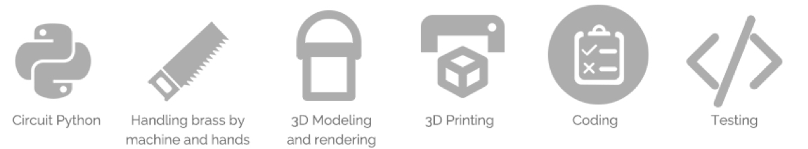
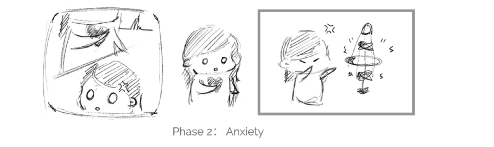
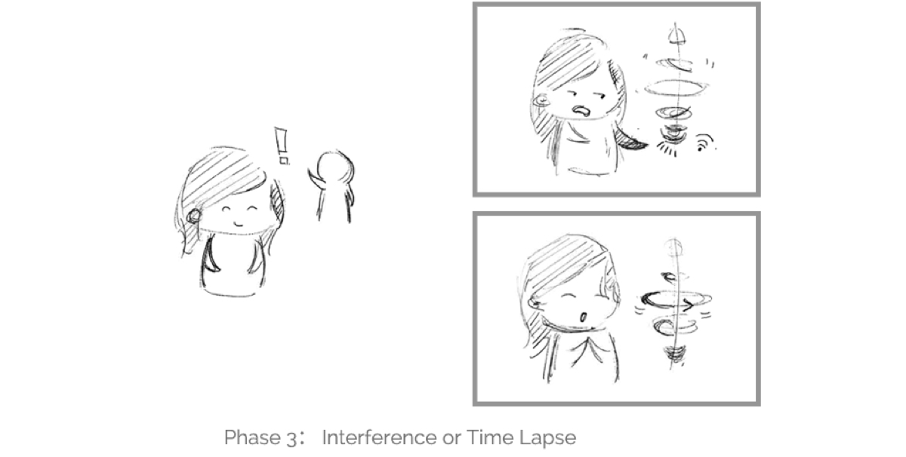
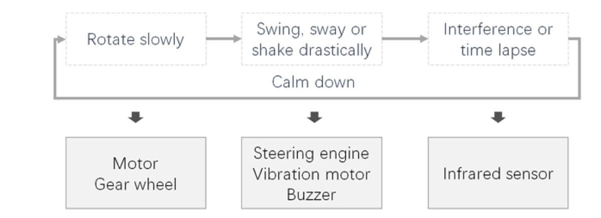
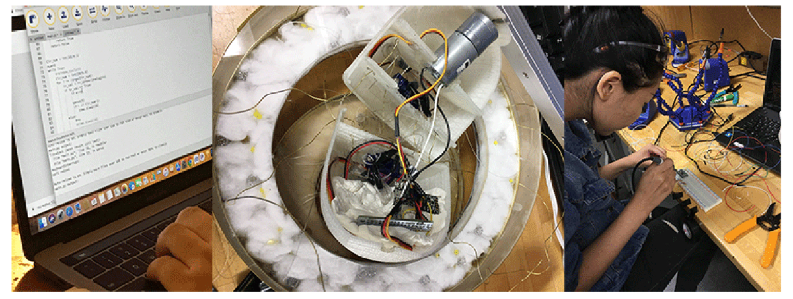
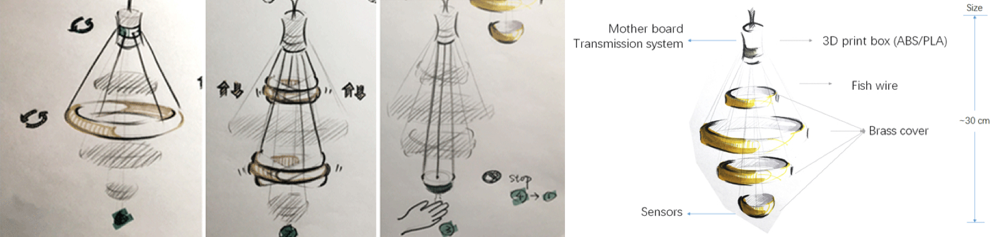
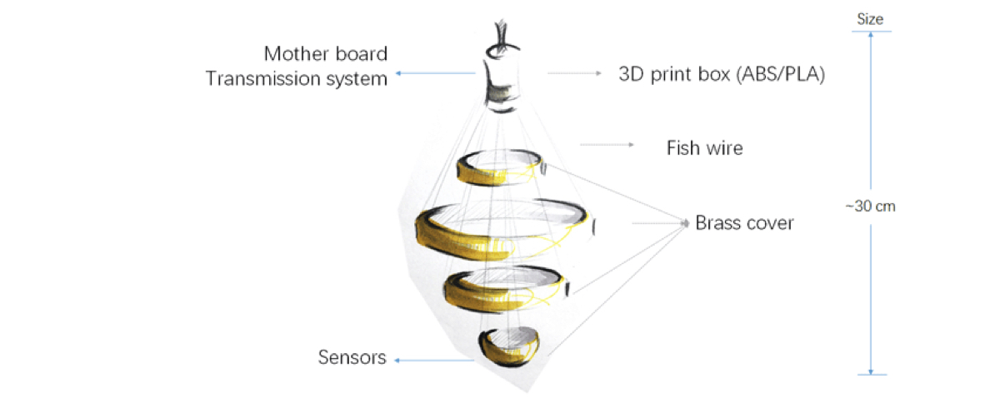

Overview
This design is an interactive art installation designed for the Resfeber emotion to show the different phases of Resfeber and to bring audience sense of participation and interaction.
This project happened in the pre-term session- the Design Boot Camp of the EDI program started on September 5th. Over the three weeks of activities, I created my projects in response to this year's prompt, Resfeber, or the tangle of anxiety and anticipation before a new journey begins.
The Takeaways
Inspirations

If you couldn’t already tell by the way it ties your tongue in knots, resfeber is a Swedish term whose very specific meaning has been the subject of countless artsy Pinterest posts featuring photos of sunsets and laughing couples on empty highways or grassy fields.
Studying at Northwestern University is my first time to study aboard which made me nervous, but at the same time, I knew I was going to accommodate this life and to face another new challenge in a very short time.

Emotion is a loop with some ups and downs.
Storyboard

 
Interaction and Function Analysis

Technical Solution
 Appearance Design

Crafting

1. Laser Cutting Acrylic into different pieces
2. 3D printing the cover for the board, sensors, and servo
3. Handicraft
4. Assembling
5. Testing and Adjusting
Final result


Challenges
1. Something hanging from the ceiling not just a box-like design on the table
2. Making some rotation
3. Tring to handle some new material I haven’t used before
4. Making something more like an art installation
Next Steps
1. Optimize layout and structure design
2. Redesign the rotation structure
3. Make sure the power supply based on Itsy Bitsy.
Designed and coded by Faye Yifei Gong | All Rights Reserved | @fayegong.xyz© 2016-2019